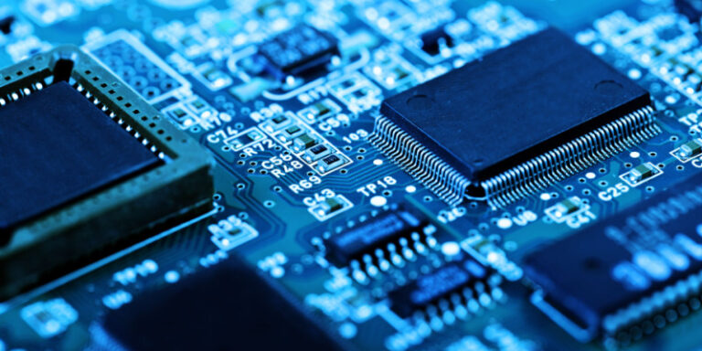
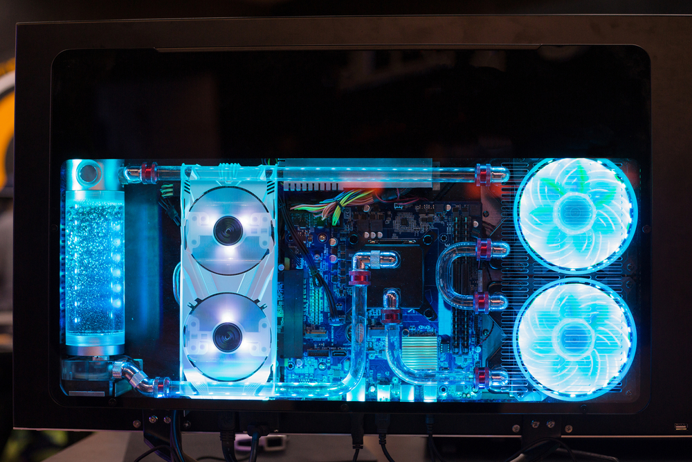
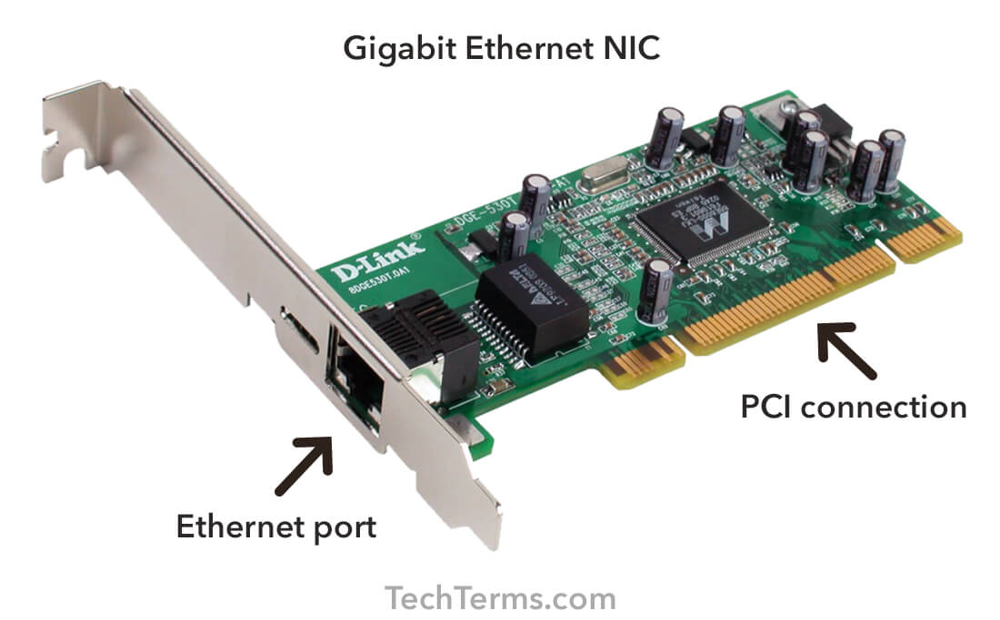

CPU (Central Processing Unit)
The CPU is the brain of the computer, responsible for executing instructions and processing data. Key terms include cores, threads, and clock speed.
Motherboard
The motherboard is the main circuit board that connects all components, allowing communication between the CPU, RAM, and other hardware.
Memory (RAM)

RAM is temporary storage for data being actively used by the CPU. Key terms include DDR, capacity (GB), and speed (MHz).
Storage

Storage options include HDD (Hard Disk Drive) and SSD (Solid State Drive), used for permanent storage of the operating system, applications, and data.
Graphics Processing Unit (GPU)

The GPU handles rendering of images, video, and animations, crucial for gaming, video editing, and graphic design.
Power Supply Unit (PSU)

The PSU converts electricity from an outlet into usable power for the computer components. Key terms include wattage and efficiency rating.
Cooling System
Cooling systems include air cooling and liquid cooling, maintaining optimal temperature for the CPU, GPU, and other components.
Case (Chassis)

The case houses and protects all the internal components, providing physical support and cooling.
Network Interface Card (NIC)
Network interfaces can be Ethernet (wired) or Wi-Fi (wireless), connecting the PC to a network for internet and local communications.